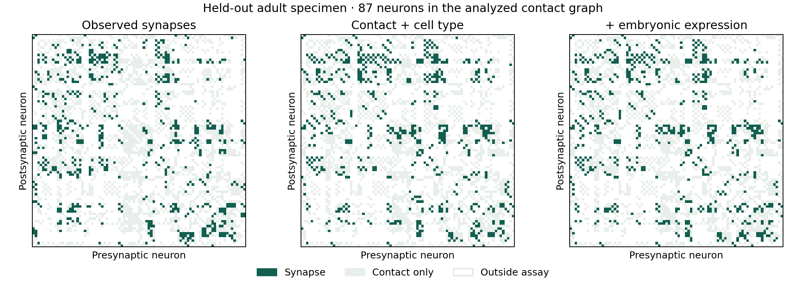

From contact to synapse
Among C. elegans neurons that touch, which pairs form a chemical synapse? We test how much embryonic gene expression adds to a shared rule that already knows contact area and broad cell type.
Predicting held-out connections
Loading results…
| Model | Average precision | Log loss |
|---|


What the models know
Physical contact
Measured contact area, each neuron's contact totals, and developmental order.
Cell type
Broad source and target types such as sensory neuron, interneuron, or motor neuron.
Embryonic expression
Six expression components for each subtype, plus interactions between the two candidate partners.
Scope
The assay begins with measured anatomy and compares a shared statistical rule across touching pairs. The embryonic RNA profiles and post-hatching connectomes come from separate animals. The estimate describes extra predictive information; individual molecular causes and the formation of the anatomy require different evidence.
Source data and methods are available in the reproduction notes.
Data sources
- Connectomes across developmentWitvliet et al. · 2021
- Lineage-resolved molecular atlasPacker et al. · 2019